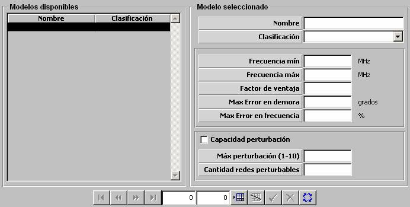

COMSM

Descripción de los parámetros:
Frecuencia Mínima: Este parámetro determina el límite inferior del rango de frecuencias en el que el modelo de COMSM evalúa emisiones de frecuencias radio (HF y U/VHF) para determinar si son detectadas. El modelo de COMSM no detecta emisiones por debajo de esta frecuencia.
Unidades: MHz
Rango: 0 – 99999
Frecuencia Máxima: Este parámetro determina el límite superior del rango de frecuencias en el que el modelo de COMSM evalúa emisiones de frecuencias radio (HF y U/VHF) para determinar si son detectadas. El modelo de COMSM no detecta emisiones por encima de esta frecuencia.
Unidades: MHz
Rango: 0 – 99999
Factor de Ventaja: Este parámetro es tenido en cuenta por el modelo de COMSM para calcular su alcance. El alcance al que el modelo de COMSM puede detectar una emisión de equipos de comunicaciones es el alcance de dicho equipo multiplicado por este factor.
Unidades: ---
Rango: 0 – 1,999
Ejemplo:
Si Factor de Ventaja = 0 ⇒ No detecta emisiones de comunicaciones.
Si Factor de Ventaja ≈ 1 ⇒ Alcance ESM ≈ Alcance comunicaciones.
Si Factor de Ventaja ≈ 2 ⇒ Alcance ESM es doble del alcance comunicaciones.
Máximo Error en Demora: Este parámetro modela el error con el que el modelo de COMSM obtiene la demora de las emisiones de comunicaciones detectadas. Dicho error se calcula para cada detección como un valor aleatorio entre –error y error, siendo “error” el valor asignado a este parámetro.
Unidades: grados
Rango: 0 – 90
Máximo Error en Frecuencia: Este parámetro modela el error máximo con el que el modelo de COMSM obtiene la frecuencia de las emisiones de comunicaciones detectadas.
Unidades: %
Rango: 0 – 100
Capacidad Perturbación: Este parámetro determina si el COMSM tiene capacidad de producir perturbaciones en las comunicaciones detectadas.
Máxima Perturbación: Este parámetro determina el nivel máximo de perturbación que puede aplicar el COMSM. Es tenido en cuenta por los modelos de comunicaciones (Fonía, Mensajería, Link 11 y Link 16) con equipos radio (bandas HF y U/VHF) para modelar el efecto de la perturbación en la red.
Unidades: ---
Rango: 1 – 10
Cantidad Redes Perturbables: Este parámetro determina el número máximo de redes de comunicaciones que puede perturbar simultáneamente el COMSM.
Unidades: ---
Rango: 1 – 24